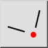
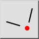
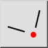
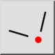

Intersection manuelle
Barre d'outil / icône :
 

Menu : Accrochage > Intersection manuelle
Raccourci : S, Y
Commandes : snapintersectionmanual | sy
Ceci est une traduction automatique.
Barre d'outil / icône :
 

Menu : Accrochage > Intersection manuelle
Raccourci : S, Y
Commandes : snapintersectionmanual | sy
Parfois, le mode d'accrochage d'intersection ne peut pas être utilisé pour accrocher à un point d'intersection parce que le point d'intersection se trouve à l'extérieur de l'une des entités ou des deux. Cet outil d'encliquetage vous permet de spécifier explicitement deux entités qui se croisent et de les encliqueter à leur point d'intersection.